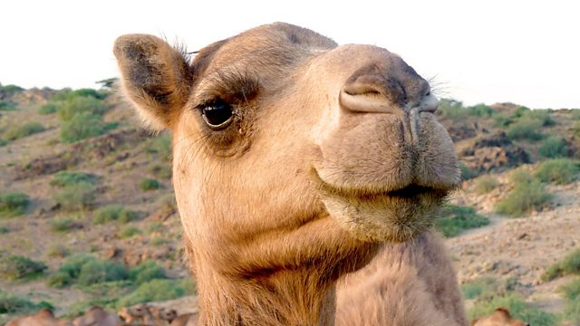
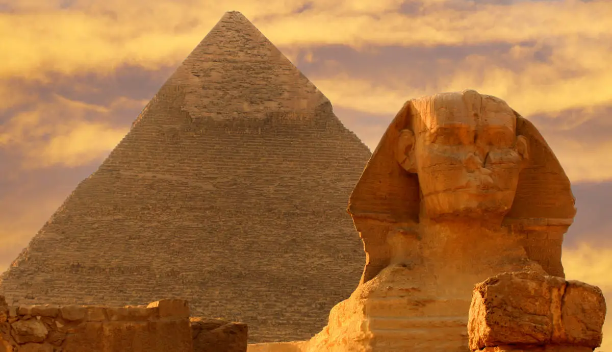

Sahara Desert
Explore the Sahara Desert's mesmerizing sand dunes, where you can witness the magical play of light
and shadows during sunrise and sunset. Take a guided camel trek across the Sahara and immerse
yourself in Berber culture, enjoying traditional music and stargazing around a campfire.

Camel
Embark on a camel safari to experience the gentle swaying ride of these desert creatures and discover
the unique charm of desert travel. Camels are your trusty travel companions in the arid landscapes,
making your journey unforgettable and comfortable.

Egypt
Uncover the mysteries of ancient Egypt by visiting the Great Pyramid of Giza, an architectural marvel
that's stood the test of time for over 4,500 years. Marvel at the exquisite hieroglyphics and
intricate wall paintings in the Valley of the Kings and experience a true walk through history.